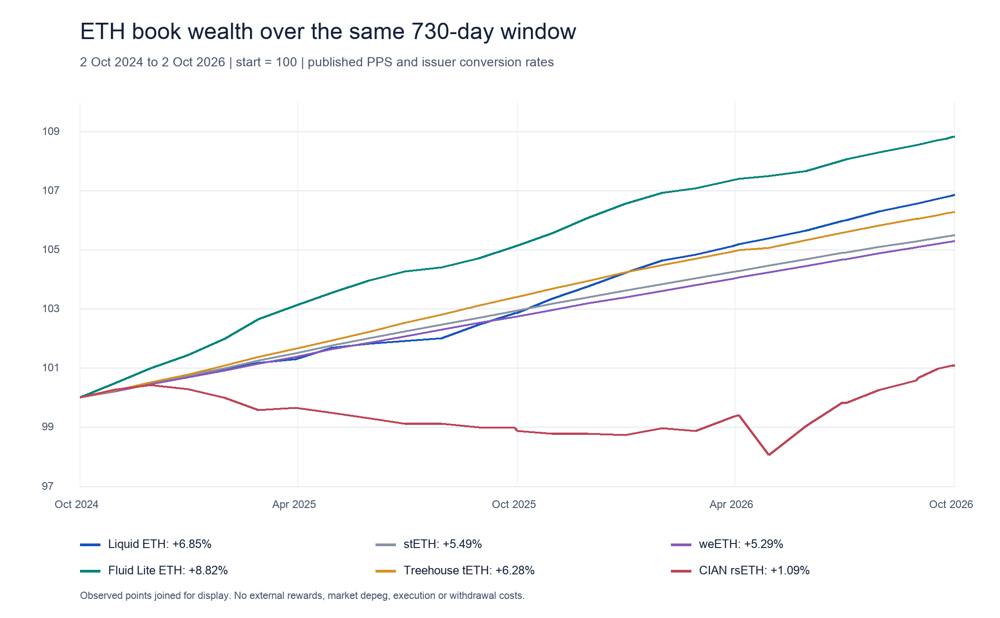

ETH market and return history
The wealth window runs from 2 October 2024, 23:59:59 UTC to T, 2 October 2026, 23:59:59 UTC. Twenty-four completed monthly snapshots cover October 2024 to September 2026. The original capture was completed on 3 October 2026; documentation checked during the 4 October 2026 presentation review does not change this window. Published balances and price-per-share (PPS) observations do not reconstruct every historical product or strategy position.
Comparable ETH book returns

Each position starts at 100 ETH-equivalent units. The chart follows the quantity of ETH represented by the published book value, so ETH/USD does not affect it. Fluid is already denominated in rebasing stETH, whose balance increases with staking income; applying wstETH conversion again would count that income twice. Treehouse's internal accounting unit (IAU) uses historically verified wstETH underlying, while CIAN rsETH uses a verified issuer oracle. The comparison excludes separately paid rewards, slippage, withdrawal fees, market depegs and private distributions.
| Product | 730 days, % | First year, % | Last year, % | Annualized 730 days, % |
|---|---|---|---|---|
| Liquid ETH | 6.8501 | 2.8691 | 3.8700 | 3.3683 |
| stETH | 5.4875 | 2.9362 | 2.4785 | 2.7071 |
| weETH | 5.2947 | 2.7436 | 2.4830 | 2.6132 |
| Fluid Lite ETH | 8.8243 | 5.1346 | 3.5096 | 4.3189 |
| Treehouse tETH | 6.2761 | 3.3969 | 2.7845 | 3.0903 |
| CIAN rsETH | 1.0854 | -1.1346 | 2.2455 | 0.5413 |
The ranking changes between the first and second years. A share's return in its underlying token can also differ from its ETH return: fewer receipt-token units per share can coexist with growth in their ETH conversion value. PPS measures published accounting results, but does not explain their cause. Historical positions, fees and external payouts are needed to attribute the result to a strategy. The return-driver review separates the conclusions supported by these observations from the remaining attribution work. Product terms explains what can change between book value and the final withdrawal amount.
History of the 25 largest observed protocols
The API observations below describe each protocol's ETH-family exposure in dollars. They overlap and are not added together. A history that starts after October 2024 may reflect a launch, migration or change in the data adapter. Missing observations mean unknown, rather than zero. Dollar changes combine ETH price movements, capital flows and measurement changes. A direct-ETH balance also excludes receipt tokens, so it does not by itself measure total ETH-family exposure.
| Protocol | First point | USD millions | September 2026, USD millions | USD change, % | Months observed / 24 |
|---|---|---|---|---|---|
| Lido | 2024-10 | 26024.51 | 26371.34 | 1.33 | 24 |
| Binance staked ETH | 2024-10 | 4179.76 | 9959.20 | 138.27 | 24 |
| Aave V3 | 2024-10 | 7923.20 | 9777.67 | 23.41 | 24 |
| EigenCloud | 2024-10 | 11256.27 | 6990.47 | -37.90 | 24 |
| ether.fi Stake | 2024-10 | 5639.62 | 5124.99 | -9.13 | 24 |
| SparkLend | 2024-10 | 2642.43 | 4106.81 | 55.42 | 24 |
| Sky Lending | 2024-10 | 3821.54 | 1654.16 | -56.71 | 24 |
| Morpho Blue | 2024-10 | 295.04 | 1432.97 | 385.68 | 24 |
| Rocket Pool | 2024-10 | 2000.46 | 1393.00 | -30.37 | 24 |
| JustLend V1 | 2024-10 | 10.72 | 1298.99 | 12012.18 | 24 |
| Kelp | 2024-10 | 234.62 | 1121.41 | 377.96 | 24 |
| StakeWise V3 | 2024-10 | 353.89 | 1003.93 | 183.68 | 24 |
| Concrete | 2025-02 | 2.98 | 941.00 | 31526.51 | 20 |
| Compound V3 | 2024-10 | 682.04 | 713.73 | 4.65 | 24 |
| mETH Protocol | 2024-10 | 1282.88 | 629.25 | -50.95 | 24 |
| Coinbase Wrapped Staked ETH | 2024-10 | 519.15 | 507.07 | -2.33 | 24 |
| ether.fi Liquid | 2024-10 | 868.94 | 397.62 | -54.24 | 24 |
| Curve DEX | 2024-10 | 425.69 | 266.95 | -37.29 | 24 |
| Aave V4 | 2026-03 | 0.91 | 232.94 | 25621.20 | 7 |
| Stader | 2024-10 | 356.77 | 239.80 | -32.79 | 24 |
| Fluid Lending | 2024-10 | 331.91 | 234.05 | -29.49 | 24 |
| Fluid Lite | 2024-10 | 86.05 | 208.21 | 141.97 | 24 |
| Liquity V1 | 2024-10 | 363.55 | 193.36 | -46.81 | 24 |
| Symbiotic | 2024-10 | 1493.66 | 163.53 | -89.05 | 24 |
| Frax Ether | 2024-10 | 378.13 | 135.60 | -64.14 | 24 |
All 2,088 protocol-month rows are retained in data/eth/protocol_eth_history_monthly.json; 247 lack token observations. The universe is selected from current discovery, which can underrepresent products that closed or disappeared from the feed. This is survivorship bias: the dataset is better at finding survivors than reconstructing every past participant. It does not prove that omitted products were absent from the historical market.
Changes in market construction
Liquid ETH has 719 Accountant events: 653 rate updates and 66 parameter events. Fees changed during the window, so the current 35 bp rate cannot be applied to both years. Optimism rates were reconstructed separately and historically differed from Ethereum. A single current fee or share rate would therefore obscure part of the history.
By 3 October, Pendle discovery shows 122 expired ETH-family markets out of 126. Markets must remain grouped by their maturity dates, with any outstanding redemption claims preserved. Deleting expired markets would make a maturity cycle look like a collapse in the fixed-yield segment.
The April 2026 rsETH bridge incident was followed by recovery procedures on some remote networks from June. An issuer's historical oracle price does not establish that holders on every chain could realise that price at the time. This is another reason to separate published book returns from executable investor returns. See the staking and restaking dossier.
Each semantic JSON row identifies its protocol sources. The audit guide records the direct contracts, archive blocks and hash manifests used to reproduce the observations.